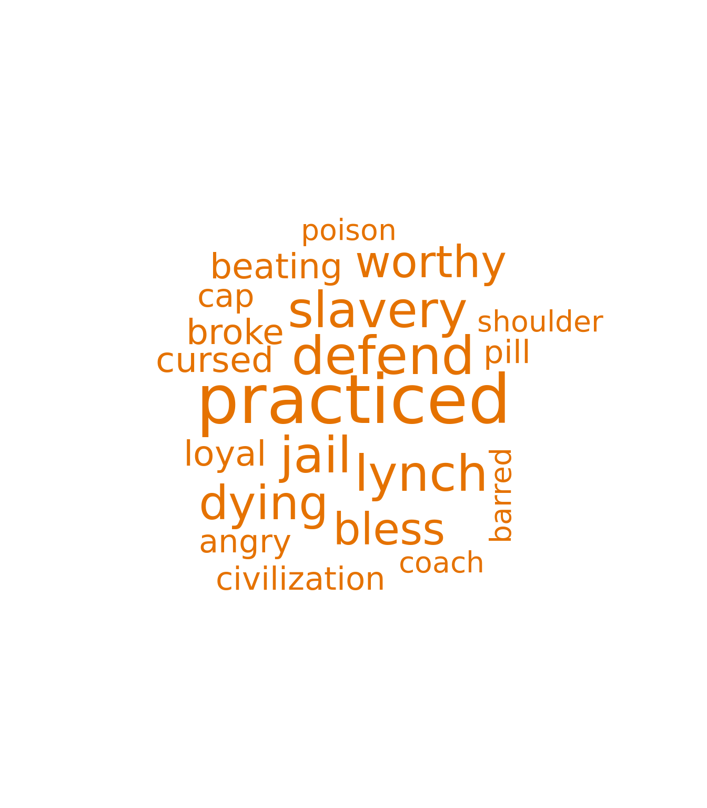
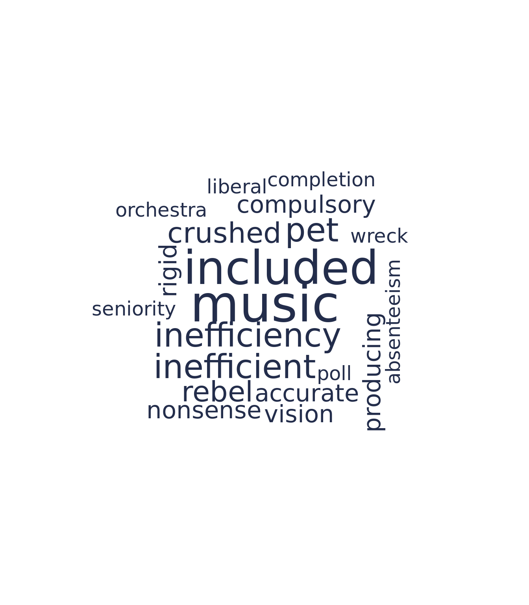
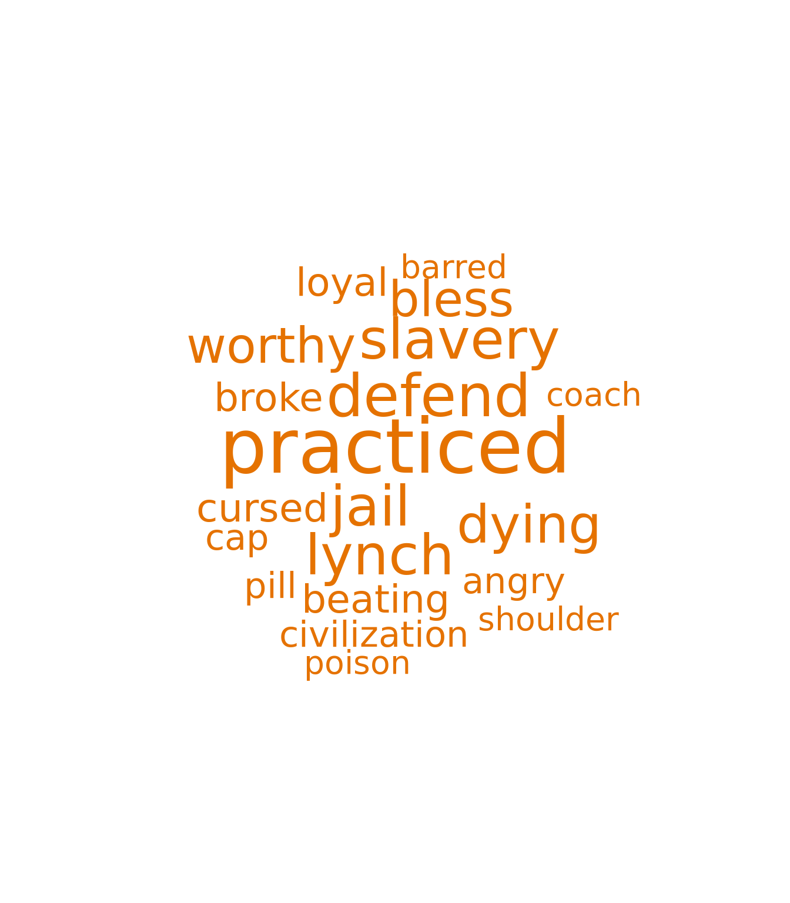
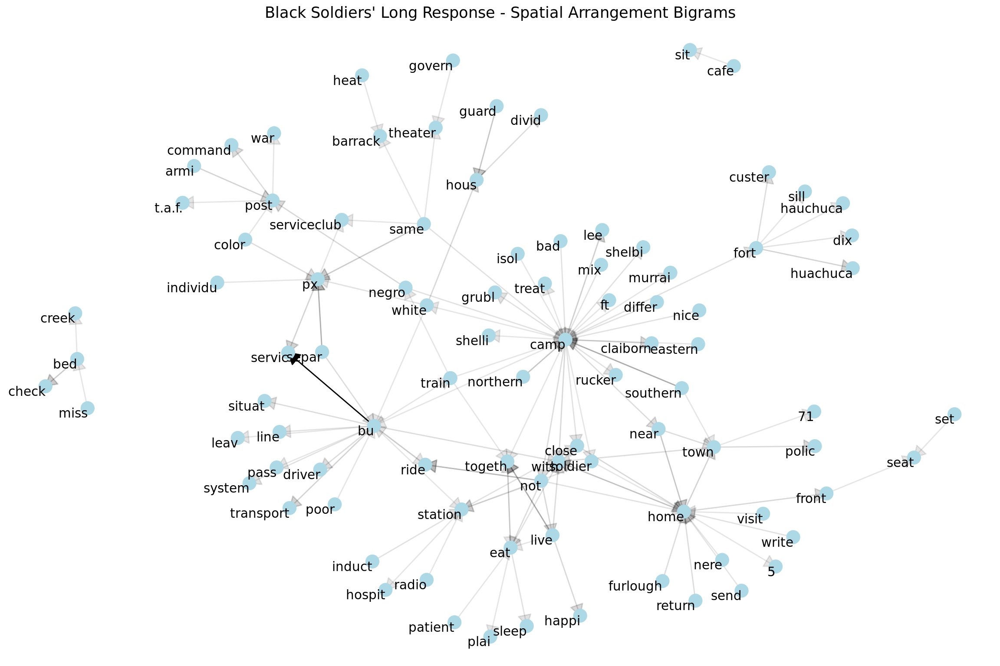
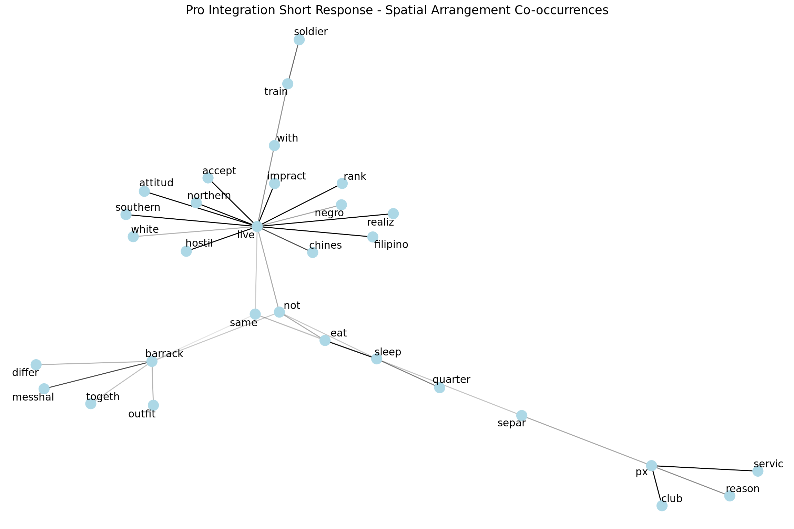
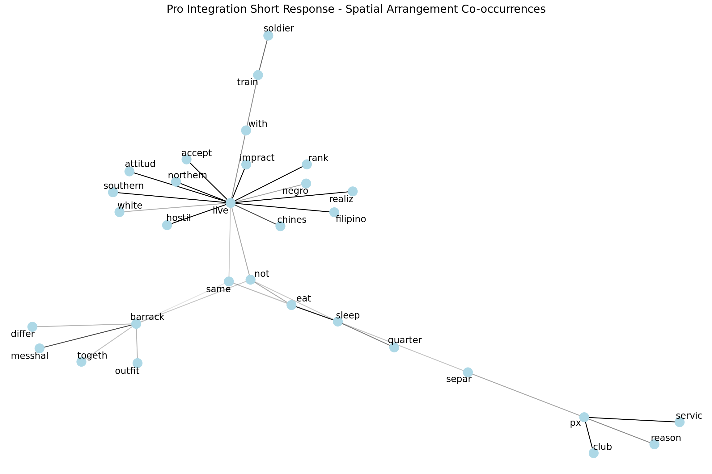

2020 DSPG Symposium Presentation
Symposium Presentation of the 2020 DSPG American Soldier Project
American Soldier Overview
- American Soldier is a project headed by Ed Gitre and is funded by the National Endowment for the Humanities as a digital history project.
- Data set includes 65,000 pages of uncensored commentaries written by U.S. soldiers stationed around the globe during WWII.
- This data set was transcribed by Volunteer citizen-archivists on Zooniverse.
Project Goals
- Our main topics of focus from the data:
- Race relations (S32: attitudes of and towards Negroess, Mar 1943)
- Gender relations (S90: attitudes toward Women's Army Corps, Nov-Dec. 1943)
- Race and Spatial arragements
Data
- Survey 32:
- Outfits Question (Multiple Choice): "Do you think white and black soldiers should be in separate outfits?"
- Short Response (Text): Any comments on their answer to question 63 (shown above).
- Long Response (Text): Any comments they had on any aspect of the questionnaire.
- Survey 144
- Post-war career plans of black soliders.
- No text data.
- Survey 190
- Attitudes towards the Women's Army Corps (WAC): Is the army any place for a girl to be?"
- No text data.
Methods
- Language Embeddings (CMDA)
- Topic Modeling
- Sentiment Analysis
- Text Networks
Summary Statistics
So breifly we want to give a sense of the soldiers who took Survey 32 as they constitute the population we did our text analysis on.
Overall the soldiers are on the younger side.
- The Black soldiers surveyed were not well educated in contrast with the white soldiers where most had atleast some highschool.
- White soldiers were predominately against integrating outfits while Black soldiers where mostly split or didn't care.
Text Cleaning
- White: 2,324 respondents
- Long Response Average: 56.71 words
- Short Response Average: 11.48 words
- Black: 3,464 respondents
- Long Response Average: 73.04 words
- Total: 8,102 text responses
Text Sample: "when the war going to quit? [paragraph] will filling in these questions do any good? [paragraph] now it ant[ain't] no good if [unclear][/unclear] dond doe as i hope but you small help the poor culler[colored] people cause we dont now[know] what we are doing [by the man who that was interviewed]"
- Cleaning the text:
- Manual cleaning of tags
- Stemming
- Spell Check
- Lemmatizing
Race Relations
sentiment analysis start with radar chart then unique word clouds
Sentiment Analysis
The NRC dictionary associates a word with the following sentiments: positive, negative, anger, anticipation, disgust, fear, joy, sadness, surprise, and trust. The sentiment of a body of text equals the number of words contributing to that sentiment. A word may contribute to multiple sentiments, yet each word is weighted equally in its contribution.
Words referring to race are biased within the sentiment libraries. For example, within the NRC lexicon, "black" and "negro" are associated with the negative and sadness sentiments, while "white" is associated with the anticipation, joy, positive, and trust sentiments. These words are removed from the text before sentiments are analyzed to remove racial bias.
At first, sentiments were computed on all responses without any sort of filtering. This didn't produce interesting results as the differences between groups are lost in the noise due to the fact that largely soldiers are talking about the same war-related things. To reduce this noise, we extracted the words used uniquely by black and white soldiers and analyzed their sentiments.
Unique Words
Since Survey 32 is generally about the war and experience within the military, many soldiers write about the same topics and use the same words, which adds noise and makes it harder to differentiate the sentiment distribution between different groups. In this section, we look at words that are used uniquely by certain groups. There are X words used in the entire dataset. X1 are used uniquely by black soldiers, and X2 are used uniquely by white soldiers.
The wordclouds below visualize the top 20 frequently used unique words by black and white soldiers, on the left and right respectively. The size of the word is proportional to number of times it appears in the text.

The unique words reveal what topics aren't addressed by the other group. Perhaps, the most important takeaway from these wordclouds is that the words slavery, lynch, or jail never appeared in the response of a white soldier. Black soliders are discussing these topics, yet white soldiers aren't even remotely addressing them. Instead, white soldiers unique words were significantly more lighthearted as they discussed things such as music and pets.
Next, the sentiment distributions of the unique words used by black and white soldiers are compared in radar chart below. To create this chart, each word is associated with one or more sentiments. Its contribution to that sentiment is scaled by the number of times that word appears in the text. Then, a total count for each sentiment can be created for both racial groups. Finally, these counts are normalized to the total number of unique words contributing to sentiment in that racial group.

The plot was created from the words used uniquely by each group, so the words used to evaluate sentiment for black soldiers were never used by white soldiers and vice versa. The unique words of black soldiers corresponded with more fear, disgust, anger, and sadness than those of white soldiers.
Co-Occurence Networks
- Used community detection algorithms on the co-occurence networks to identify groups of related words.
- Size of the nodes correspond to the degree of the node ie. it is connected to more words.
Black Soldiers' Long Comment
White Soldiers' Long Comment
Topic Modeling
- A useful method to understand what the general themes are wihtin a corpus by grouping the words which would constitute a topic
- Used Biterm Topic Modeling to model the topics within each corpus of answers
- This works better on shorter texts
- It's a Gibbs Sampler that directly models the word-word co-occurrences patterns as opposed to word-document co-occurrences
Topic Model Network for Black Soldiers' Long Comment
Topic Model Network for White Soldiers' Long Comment
different colors for each racial group use those colors to make color coded text
Gender Relations
In addition to analyzing race relations between soldiers, we want to see how gender roles were discussed amongst soldiers. Our particular focus is on women's gender roles during the time of 1943, especially at the intersection of race relations. Women were obviously unable to serve in the military in the same capacity as men during WW2; however, women did contribute to the war effort through the Women's Army Corps (WAC). Survey 195 is more targeted to gender relations, but we don't have transcriptions for the free form text so we select responses that discuss gender from survey 32 using a word dictionary.
A dictionary of gender words are loaded to identy which responses relate to gender topics. This dictionary was created using terms included in the the Oxford University Press Dictionary of Gender Studies. In addition, there is consideration of how women were referred to in the 1940s such as "lady" and "sweetheart".
Furthermore, phrases such as "colored women" and "negro women" are collapsed and pre-stemmed/pre-lemmed to "colorwoman" and "negrowoman" in both the dictionary and the text. The purpose of this is to treat these references to women as a single entity as opposed to the text being analyzed as colored and negro being frequent adjectives for women.
You can view the dictionary below:
We wanted to understand the relationship between women and black and white soldiers. To create this plot, we filtered the original corpus to responses that contain gendered words (specifically female words), then proceeded to compute average sentiments for both black and white soliders in the same manner discussed previously.
When comparing the sentiment results with the knowledge gained from the co-occurence and bigram analysis of gender resposnes, this plot becomes very revealing. The average sentiments for black soliders' responses about women are more fearful, more negative, less trusting and less joyful than white soldiers' responses. In the female words bigrams plot for black soldiers we see that black soldiers often write that "white woman holler rape". This observation in the bigram analysis reflects the fear that black soldiers had in being accused of sexually harassing white women.

add key takeaways

add key takeaways
Spatial Arrangement
add descriptoin of methods
- Spatial segregation of Black Americans was enforced in the American South with numerous local and state laws known as the Jim Crow laws from late 19th century to early 20th century.
- Are themes of spatial segregation prevelant in the soldiers' responses and experiences in the military during WWII?
- We created a spatial dictionary with words such as camp, messhall, etc. to see what the soldiers were saying when they were talking about these spaces.
- We see that there's a greater amount of commentary from black soldiers than white soldiers.
- Black soldiers mention various military spaces and these words are paired with words such as "mix", "together", "same", "separate", and "individual."
- The white soldiers also have commentary on the integration suggests they want separate messhalls, and to not eat or live with the Black soldiers.
- It seems some white soldiers were okay with integration, but these bigrams maybe preceeded by negating words.


- We also looked at how white soldiers talked about spatial arrangments by sorting if they were pro integration of outfits or opposed.
- Although some white soldiers were in favor of integrating outfits, there was still clear commentary from the soldiers should not be sharing the space in living arrangements or social space with black soldiers.
- Also see commentary suggesting Southern and Northern soldiers be seperated.
- Also mentions the Chinese and Filipinos.
 

Conclusion
- Novel dataset from a unique, historic collection by the U.S. Army during WW2
- Analyze soldiers' handwritten responses by using natural language processing methods and social network analysis to dive into soldiers' attitudes about:
- Race relations
- Black soldiers discussed their position with in the military and society in the context of their race more frequently than white soldiers. White soldiers more frequently discussed the war or their career plans.
- Gender relations
- The majority of male soldiers did not think that women belonged or could contribute to the military.
- Tension due to interracial relationships.
- Race and spatial arragement
- While some white soldiers wanted to desegregate the military outfits, they did not view their black counterparts as equals and didn't want to live, eat or sleep alongside them.
- Race relations